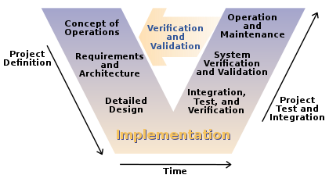

V-Model

V-mudel on arendusprotsessi esitusviis tarkvaraarenduses, mis laiendab Waterfall mudelit. Selle asemel, et järgida lineaarset liikumist, kõverdatakse V-mudeli etapid pärast kodeerimisfaasi ülespoole, moodustades V-kujulise struktuuri. V-mudel näitab seoseid arenduse elutsükli iga faasi ja sellega seotud testimisfaasi vahel. Horisontaalne telg tähistab aega või projekti täielikkust (vasakult paremale), samas kui vertikaalne telg tähistab abstraktsioonitaset (kõige jämedamal tasandil).
Plussid
1.See on väga distsiplineeritud mudel ja faasid viiakse läbi ükshaaval.
2.Töötab hästi väiksemate projektide puhul, kus nõuded on väga hästi mõistetavad.
3.Lihtne ja hõlpsasti mõistetav ja kasutatav.
4.Mudeli jäikuse tõttu lihtne hallata. Igal etapil on konkreetsed tulemused ja läbivaatamisprotsess.
Miinused
1.Suur risk ja ebakindlus.
2.Pole hea mudel keeruliste projektide jaoks.
3.Kehv mudel pikkade ja käimasolevate projektide jaoks.
4.Ei sobi projektidele, kus nõuded muutuvad.
5.Kui rakendus on testimisfaasis, on raske tagasi minna ja funktsiooni muuta.